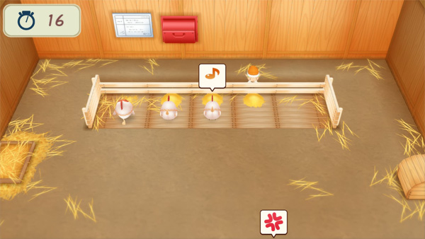

Hogar de los duendes de la ciudad Mineral


Los siete Duendes de lacosecha viven en una cabaña en el callejón al lado de la iglesia. La puerta de entrada a la cabaña de los duendes se abre desde las 9:00 am hasta las 5:00 pm. Los duendes son el séquito de ayuda personal de la Diosa de la Cosecha y viven para trabajar para ella y para ti. A estos pequeños les encanta ayudar en todo lo que pueden.
| Horas | 9:00 am - 5:00 pm. |
|---|---|
| Cerrado | Dias festivos. |
| Habitado por |
|
Cuando los Duendes de la Naturaleza participan en un evento fuera de su casa, como los eventos de Flor Preservada o Embarazo, la puerta de su cabaña quedará cerrada con llave hasta el día siguiente.
Pedir ayuda
Contratar a los duendes de la cosecha es tan fácil como hablar con ellos y luego seleccionar Solicitar ayuda. Un duende que tenga al menos 3 notas de amistad contigo ofrecerá sus habilidades para ayudarte a regar cultivos, cosechar cultivos o cuidar del ganado y aves de corral, lo que incluye alimentación, cepillado y envío de productos animales. Luego seleccionará la cantidad de días que desea que le ayuden (3, 5 o 7 días). A partir del día siguiente, el Duende de la cosecha asignado estará en su granja a las 6:00 am para realizar su trabajo exclusivo hasta las 6:00 pm. Los duendes de la cosecha no trabajarn durante una tormenta de mal tiempo.
Los productos que recolectan mientras cosechan o cuidan animales serán transportados mágicamente a su contenedor de envío y vendidos cuando Zack pase por allí a las 5:00 pm. No puedes acceder a estos bienes después de que los duendes los hayan cosechado. Si estás intentando recolectar artículos específicos, como Leche (S), necesitarás cosechar los bienes que deseas antes de que los duendes lleguen a ellos ese día.
Cuanto más trabajen los Duendes en cada una de las tres tareas, más hábiles se volverán en esas tareas. Dentro del menú Relaciones hay una lista de los niveles de habilidad de los duendes. Un duende no es inherentemente mejor en una tarea en comparación con otros duendes, pero puede mejorar dependiendo de la frecuencia con la que le pides a ese duende que trabaje en una tarea en particular. Cuanta más experiencia tienen, más rápido trabajan.
Mini juegos
Además de trabajar en tu granja, los duendes pueden ganar experiencia jugando minijuegos. Puedes jugar un juego por objeto por día cuando el objeto de la naturaleza esté dentro de su cabaña. Si la puntuación final obtenida al final del juego es mayor que la puntuación objetiva indicada al comienzo del juego, pasarás el juego y el objeto ganará experiencia laboral. Cuanto más completes un minijuego específico con un duende en particular, mayor será el objetivo de ese juego:
| Juego de regar cultivos | Juego de cosechar | Juego de alimentar a las gallinas |
|---|---|---|
| 9 puntos | 2 puntos | 10 puntos |
| 12 puntos | 3 puntos | 15 puntos |
| 15 puntos | 4 puntos | 20 puntos |
| 18 puntos | 5 puntos | 30 puntos |
| 21 puntos | 7 puntos | 35 puntos |
| 24 puntos | 9 puntos | 45 puntos |
| 27 puntos | 10 puntos | 55 puntos |
| 30 puntos | 11 puntos | 60 puntos |
Cuantas más veces superes con éxito el objetivo de puntos de un minijuego, más experiencia ganará el Duende de la Naturaleza. Por otro lado, si no cumples el objetivo final, puedes perder un poco de experiencia laboral.
Las puntuaciones más altas de los minijuegos están documentadas en el Libro de Récords que se encuentra dentro de la estantería de la casa de la granja.
Juego de regar cultivos
El primer juego es un juego de memorización. El campo del minijuego se compone de 25 casillas de campo de tierra. Cuando comience el cronómetro, varios de estos cuadrados se iluminarán en un patrón secuencial. Cuando sea tu turno, usa los controles direccionales para navegar por el objeto de la naturaleza del jugador en el mismo orden secuencial, presionando el botón A cuando el objeto esté parado en el cuadrado adecuado para dirigirlo a rociar agua.
Aparecerá un brote cuando riegues el lugar en el orden correcto. Si regaste fuera de orden, el suelo aún se mojará, pero no aparecerá ninguna planta durante el resto de la ronda. El juego continuará hasta que consigas regar la secuencia correcta de cuadrados.
Tienes 25 segundos para realizar tres rondas de riego de memoria. Luego, su puntuación se calculará en función del número total de cuadrados de campo regados más el número de brotes adicionales que aparecieron. Perderás puntos por cada lugar que haya sido regado fuera de secuencia.
Juego de cosechar
El segundo juego es un juego de ritmo constante. En este minijuego, el Duende de la Naturaleza debe cosechar la cantidad de nabos objetivos en 60 segundos. Después de que comience el cronómetro, presiona el botón A unas 20 veces, a un ritmo constante, para sacar el nabo del suelo. Si tu ritmo al presionar botones es demasiado rápido, aparecerá una burbuja de sudor sobre la cabeza del Duende de la Naturaleza. Si esto continúa por mucho tiempo, el Duende de la Naturaleza podría caer hacia atrás sobre su pequeño trasero de duende y no poder arrancar la cosecha.
Después de 60 segundos, tu puntuación se calculará en función de la cantidad de cosechas exitosas menos la cantidad de veces que el objeto no pudo arrancar el nabo. Cumplir el objetivo del juego le otorgará experiencia de sprite para una cosecha más rápida.
Idealmente, sólo necesitas arrancar con éxito suficientes cultivos para cumplir los objetivos. No se le otorgará más experiencia laboral por tener un gran rendimiento. Siéntete libre de detenerte y dejar que el tiempo del juego expire después de cosechar suficientes nabos para cumplir el objetivo del juego.
Juego de alimentar a las gallinas
En el último juego, tu duende alimenta a cinco gallinas. El objetivo del juego es colocar alimento para pollos en los contenedores de alimento en el momento adecuado. Poner el alimento en el contenedor cuando aún está lleno contará como un error, y dejar que el pollo salga corriendo de la pantalla porque el contenedor está vacío de alimento también contará como un error. Tienes 60 segundos para cumplir el objetivo de puntos del juego.
Para llenar los contenedores de alimento, use los controles direccionales izquierdo/derecho para colocar el objeto detrás de los cinco contenedores y presione el botón A para poner comida en el contenedor. Ganarás un punto cada vez que el contenedor de alimentación se llene correctamente.
Si bien hay cinco gallinas que alimentar, ¡no hay nada en las reglas que requiera que alimentes a las cinco aves! Un consejo útil es dejar que uno o dos pollos salgan corriendo del gallinero. De este modo, los pollos restantes podrán cuidarse más fácilmente. A menudo dejo que el pájaro del extremo izquierdo o del extremo derecho salga de la pantalla y luego atiendo a los cuatro pájaros restantes en un ritmo constante de 4 segundos.
Si bien hay cinco gallinas que alimentar, ¡no hay nada en las reglas que requiera que alimentes a las cinco aves! Un consejo útil es dejar que uno o dos pollos salgan corriendo del gallinero. De este modo, los pollos restantes podrán cuidarse más fácilmente. A menudo dejo que el pájaro del extremo izquierdo o del extremo derecho salga de la pantalla y luego atiendo a los cuatro pájaros restantes en un ritmo constante de 4 segundos.